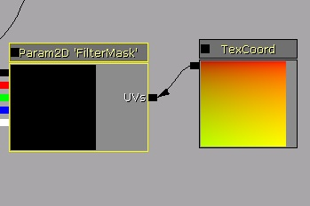

UDN
Search public documentation:
HitMaskJP
English Translation
中国翻译
한국어
Interested in the Unreal Engine?
Visit the Unreal Technology site.
Looking for jobs and company info?
Check out the Epic games site.
Questions about support via UDN?
Contact the UDN Staff
中国翻译
한국어
Interested in the Unreal Engine?
Visit the Unreal Technology site.
Looking for jobs and company info?
Check out the Epic games site.
Questions about support via UDN?
Contact the UDN Staff
Hit Mask コンポーネント
概要
実装方法
コンポーネントをアクタに追加する
SceneCapture2DHitMaskComponent が、テクスチャにレンダリングする役目をもつコンポーネントです。このコンポーネントは、ポーンまたは骨格メッシュのアクタに付属させる必要があります。
// Add hit mask to the actor
Begin Object Class=SceneCapture2DHitMaskComponent Name=HitMaskComp
End Object
HitMaskComponent=HitMaskComp
Components.Add(HitMaskComp)
アクタごとにテクスチャを作成する
キャラクターすべてに同じテクスチャを共有させるのでなければ、テクスチャを作成し、それを Hit Mask コンポーネントのレンダーターゲットとして指定する必要があるでしょう。
// Create Mask Texture of 64x64
MaskTexture = class'TextureRenderTarget2D'.static.Create(64, 64, PF_G8, MakeLinearColor(0, 0, 0, 1));
if ( MaskTexture!=none )
{
// Update HitMaskComponent with this texture
HitMaskComponent.SetCaptureTargetTexture( MaskTexture );
}
マスクをテクスチャに追加する
次は、法線テストの有無にかかわらず Radius (半径) のサイズをともなった MaskWorldLocation のワールド位置に 1 つの円を追加するものです。HitMaskComponent.SetCaptureParameters(MaskWorldLocation, Radius, MaskStartLocation, FALSE); // send capture parameterシェーダーで方向テストをまったく実施しない場合、 MaskStartLocation は必要ありません。たとえば、銃撃による傷をキャラクターの胸に作らなければならない場合、キャラクターの背後でマスクをレンダリングしてはなりません。 Radius の範囲内であっても銃撃を受けないからです。 MaskStartLocation は開始地点を示します。また、最後のパラメータが TRUE の場合は、ヒット法線テストが実行されます。 FALSE の場合は、法線テストは実行されません。単に、ワールド位置を中心にして球が作成されます。 これが作成されるのは、U の非ミラー化 (V のミラー化) のためです。両方の場所に同じものを作成することはないからです。
キャラクターへの設定方法
テクスチャパラメータ
マテリアル内で、ゲーム内で置き換えることが可能なテクスチャパラメータを作成します。これは、これから作成しようとしているターゲットテクスチャとなります。
ここでテクスチャを非ミラー化する必要があります。レンダリングする場合Uを非ミラー化することになるので、必ずテクスチャサンプリングも U を非ミラー化するようにしてください。
コード内でテクスチャパラメータを置き換える
ここで、マスクテクスチャをパラメータに設定します。以下のようにします。
// get first parameter
MIC = Mesh.CreateAndSetMaterialInstanceConstant(0); // material you'd like to replace
if ( MIC != none && MaskTexture!=none )
{
// Set new texture as FilterMask parameter
MIC.SetTextureParameterValue('FilterMask', MaskTexture); // use this texture to be used by your material
}
パラメータ
- MaterialIndex : どのマテリアルセクションをレンダリングするか。
- ForceLOD : -1 の場合、現在の LOD を使用する。
- HitMaskCullDistance : カリングの距離。これよりも遠い場合は、テストされません。
フェード関連の変数
一定期間後にフェードアウトさせることが可能です。以下は、微調整できるパラメータです。- FadingStartTimeSinceHit : 最後の銃撃後どのくらい時間をおいてフェードを開始するか。デフォルトでは 10 秒後に設定しています。-1 の場合は、無限となります。継続的な銃撃を受ける場合は、フェードが中止されます。
- FadingPercentage : 適用するカラーの割合。範囲は、0 から 1 まで。
- FadingDurationTime : フェードが開始してから継続する時間。秒で指定します。
- FadingIntervalTime : フェードの間隔。秒で指定します。